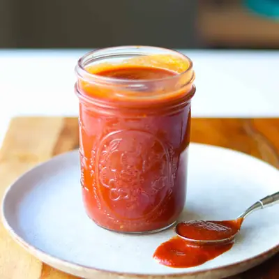

Healthy BBQ Sauce

Ingredients
- 15 ounce tomato sauce
- 3-4 tablespoons maple syrup
- 2 tablespoons tomato paste
- 1 tablespoon molasses
- 3 tablespoons apple cider vinegar
- 2 teaspoon dijon mustard (can also use honey dijon mustard)
- 1 teaspoon low-sodium soy sauce
- 1 teaspoon garlic powder
- 1 teaspoon onion powder
- 1 teaspoon smoked paprika
Steps
- Add all the ingredients to a saucepan. Stir well to combine, then place the saucepan over medium heat. Bring the mixture just to a gentle boil, stirring occasionally.
- Once boiling, reduce the heat to low and let it simmer, uncovered, for 10–15 minutes. Stir occasionally until the sauce thickens slightly and the flavors meld together.
- Taste and adjust seasoning as needed. Add more vinegar for tang, maple syrup for sweetness, or smoked paprika for extra smokiness. Remove from heat and let the sauce cool.
Recipe by Min Kwon · Kidfriendly Meals, from MJ and Hungryman. Saved here for personal use; the original has the full notes, tips and photos. Open original